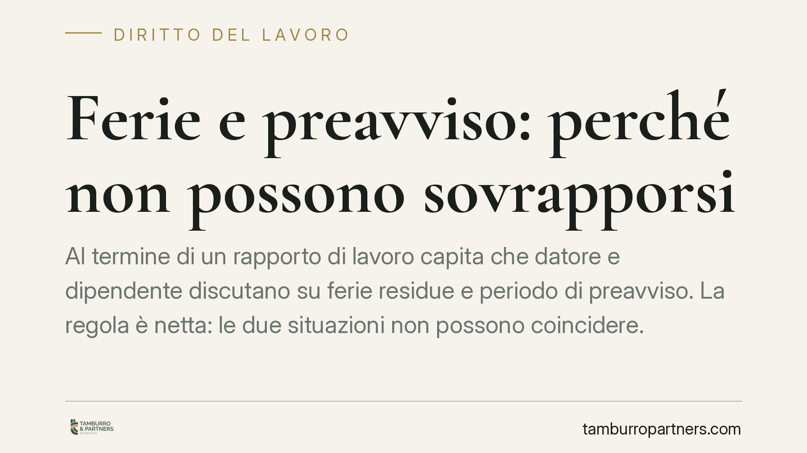

Ferie e preavviso: perché non possono sovrapporsi
Al termine di un rapporto di lavoro capita che datore e dipendente discutano su ferie residue e periodo di preavviso. La regola è netta: le due situazioni non possono coincidere. La Cassazione ribadisce che il preavviso non può essere assorbito dalle ferie, con effetti concreti sulla durata effettiva del rapporto e sulle somme dovute alla cessazione.

Il nodo: due funzioni diverse che non si sommano
Quando un rapporto di lavoro si avvia alla conclusione — per dimissioni o per licenziamento — entrano in gioco due istituti spesso confusi: il preavviso e le ferie.
Il preavviso è il periodo durante il quale il rapporto prosegue dopo la comunicazione della cessazione, così da consentire alla parte che subisce il recesso di organizzarsi (il datore per sostituire il lavoratore, il lavoratore per trovare nuova occupazione).
Le ferie, invece, sono un diritto al riposo psico-fisico. Hanno una finalità del tutto autonoma. Proprio perché le funzioni divergono, i due periodi non possono sovrapporsi.
Inquadramento normativo
Il riferimento è l'art. 2109 del Codice civile, che riconosce al lavoratore il diritto a un periodo annuale di ferie retribuite. La norma è integrata dalla disciplina che garantisce l'effettivo godimento del riposo e che vieta la monetizzazione delle ferie durante il rapporto, salvo eccezioni.
Sul rapporto tra ferie e preavviso è intervenuta la Corte di Cassazione. Con la sentenza n. 985/2017 e, in precedenza, con la n. 14646/2001, i giudici hanno affermato che il periodo di preavviso non è sostituibile né sovrapponibile con le ferie. Il datore di lavoro non può imporre il godimento delle ferie durante il preavviso per abbreviare di fatto il periodo, né può modificare unilateralmente le date già concordate.
In sintesi: se il lavoratore fruisce delle ferie residue, il decorso del preavviso resta sospeso, e riprende al termine del riposo. Il rapporto si prolunga di conseguenza.
Implicazioni pratiche
Per il lavoratore che ha ferie non godute al momento della cessazione, la conseguenza è che tali giorni non possono essere "scaricati" dentro il preavviso. O li fruisce, sospendendo il preavviso, oppure gli vengono liquidati come indennità sostitutiva in busta paga.
Per il datore di lavoro significa che non può accorciare il preavviso semplicemente inviando il dipendente in ferie. Se lo fa senza accordo, rischia di dover riconoscere sia le ferie sia l'intero preavviso.
Attenzione a una precisazione: la sospensione del preavviso vale quando le ferie sono effettivamente godute con l'assenza dal lavoro. Le parti possono però trovare un accordo diverso, ad esempio la monetizzazione delle ferie residue con cessazione anticipata del rapporto. L'accordo, per essere valido, deve essere chiaro e non imposto.
Sul piano economico incidono anche i profili contributivi e fiscali: la durata effettiva del rapporto influisce su TFR, ratei di tredicesima e maturazione di ulteriori giorni di ferie e permessi.
Cosa fare in concreto
- Verifica il residuo ferie prima di comunicare o ricevere il recesso: controlla il monte ferie e permessi maturati e non goduti dal cedolino.
- Metti per iscritto ogni accordo sulla gestione di ferie e preavviso, indicando se le ferie saranno godute o monetizzate e la data effettiva di cessazione.
- Non accettare imposizioni unilaterali: se il datore ti colloca in ferie durante il preavviso senza consenso, contesta per iscritto e conserva la comunicazione.
- Controlla la busta paga finale: verifica che l'indennità sostitutiva delle ferie non godute e l'intero preavviso risultino correttamente calcolati.
- Consigliamo di richiedere un conteggio dettagliato prima di firmare qualsiasi verbale di conciliazione o dichiarazione a saldo.
Un punto di equilibrio
La disciplina protegge la funzione di riposo delle ferie e la funzione di transizione del preavviso, evitando che l'una svuoti l'altra. La regola non è rigida al punto da impedire soluzioni condivise: ciò che conta è che la volontà del lavoratore sia libera e documentata.
Ogni situazione va valutata caso per caso, soprattutto in presenza di clausole del contratto collettivo applicato, che può prevedere durate del preavviso e modalità di calcolo specifiche.
---
Contributo informativo a cura di Tamburro & Partners - Avv. Giuseppe Tamburro. Non costituisce parere legale.
Ogni storia di lavoro ha i suoi tempi.
Se gestisci HR e vuoi un confronto su contenzioso, ispezioni o licenziamenti, scrivi allo studio. Ti rispondiamo entro un giorno lavorativo.